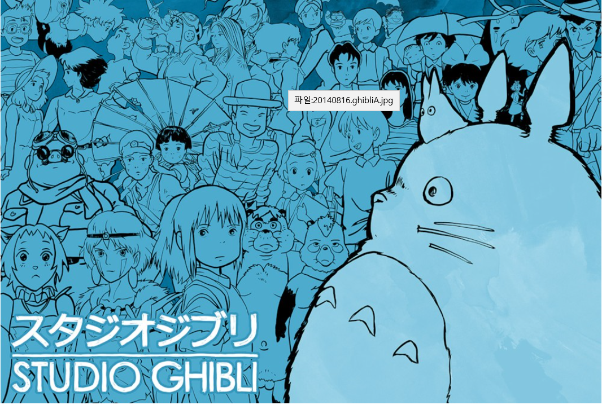
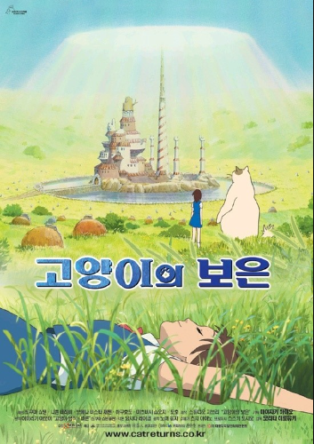
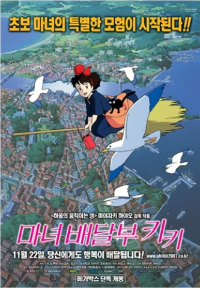

†지브리에 대한 모든 것†
목차
- 지브리의 역사
- 명칭
- 작품 특징
- 대표 작품

1.지브리의 역사
- 일본의 애니메이션 제작사. 세계적인 명성을 가진
미야자키 하야오 감독 등의 장편 애니메이션으로 유명한 곳
- 스튜디오 지브리의 공식 첫 작품은 라퓨타.
정사원제를 도입하여 월급제가 된 것은 마녀 배달부 키키 이후 부터다.
설립 시는 도쿠마 서점의 사장인 도쿠마 야스요시가 대표 CEO였으나,
실질적인 운영자는 톱 크래프트를 설립했던 하라 토오루
(原徹 1935년~. 타카하타 이사오와는 토에이 애니메이션의 입사 동기, 미야자키의 선배)였다.
2.명칭
- 명명자는 미야자키 하야오. 그는 어릴 적부터 비행기 마니아로 이 단어를 먼저 비행기 이름에서 알고 나중에 그 어원을 알게 되다.
'애니메이션 업계에 선풍(旋風)을 일으키자'는 의미로 스튜디오 이름을 지었다고 한다.
그런데 ghibli의 본 발음은 기블리(일어로는 '기브리')로 '지브리'는 미야자키가 발음을 잘못 안 것이다.
이탈리아어로 'ghi'는 '기'로 발음한다. 미야자키 하야오도 '기브리'가 바르다고 인정했으나 사명은 바뀌지 않고 현재에 이르고 있다.
3. 작품 특징
- 성우로 배우라든가, 가수, 작곡가, 기자, 감독 등, 애니메이션의 더빙과는 거리가 좀 있는 사람들을 캐스팅한다.
전문 성우는 엑스트라로 몇 명 나오는 정도. 예를 들면 고양이의 보은에서는 타나카 아츠코, 시라토리 유리가
엑스트라로 나오고, 하울의 움직이는 성에서는 오오츠카 아키오가 조역으로 나오며,
게드전기에서는 나카무라 유이치, 카토 에미리가 엑스트라로 나오는 등.
사실 처음에는 주역 캐릭터들에게 전문 성우를 붙여주고있었다. 비성우를 안쓴건 아니지만 대부분 조연,단역에 캐스팅한 수준.
지브리는 전문 성우를 기용하는 것을 기피하는 경향을 보이기 시작한다. 특히 애니메이션 전문성우는 거의
캐스팅하지 않는 편. 미야자키 왈, '성우는 목소리가 아니라 그 인물 자체의 존재감이 필요하다'는 모양.
한마디로 뛰어난 '연기'가 아니라 '캐릭터 그 자체'를 원하는 경향을 보인다.
- 지브리의 영화를 2~3번 본 사람이면 스쳐가면서 보더라도 '지브리 작품이구나' 할 수 있을 정도로
그림체가 주류 애니메이션 그림체와 차이가 많이 나는데, 선이 깔끔하다기 보다는 수채화적이고
서정적인 느낌이 조금씩 난다. 붉은 돼지에서의 하늘이나 모노노케 히메에서의 자연 풍광을 보면 이런 특징을 잘 볼 수 있다.
4. 대표 작품
 